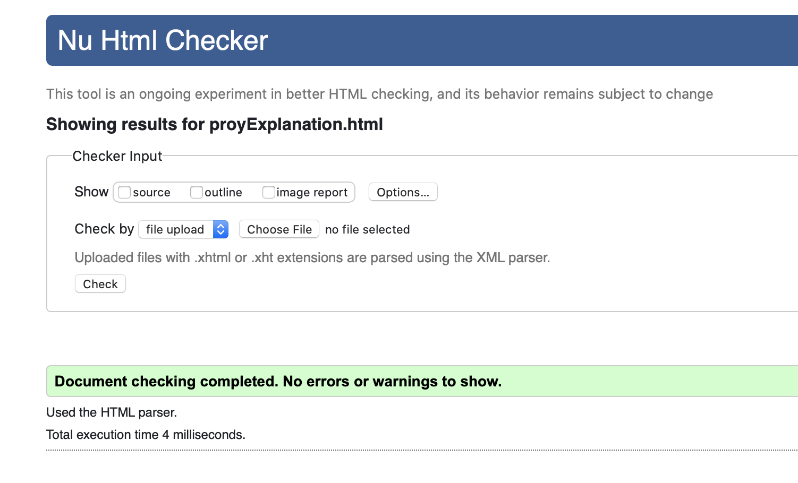

- STPSomos una empresa 100% mexicana constituida por expertos de distintas áreas, proponiendo nuevos paradigmas en la operación de medios de pago en México. |
 |
Hoy en día las transacciones tardan mucho tiempo en efectuarse y las transferencias interbancarias son complicadas, además te limitan los horarios de estas. Por lo que decidimos realizar este sistema para resolver esta problemática.
SELECT * FROM Banks WHERE country = 'MEXICO'